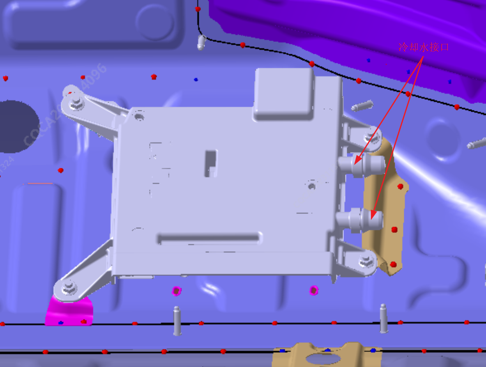
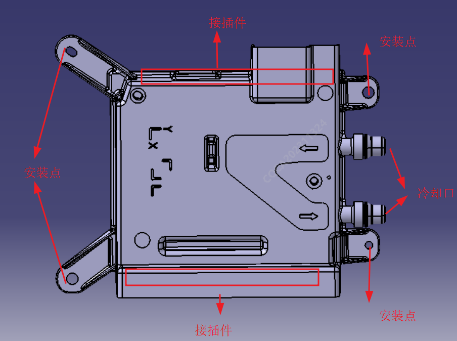

Снятие
1. В ниспадающем меню центрального дисплея нажать кнопку отключения питания автомобиля, убедиться в полном отключении питания; с помощью отвертки или насадки Torx снять облицовочную панель, ковровое покрытие и пенопластовый вкладыш в зоне подставки для ног переднего пассажира, открыв доступ к центральному компьютеру (J6M); расположение облицовочной панели показано на рисунке ниже:

2. С помощью головки M6 выкрутить 4 крепежных болта, отсоединить разъемы жгута проводов.

3. Снять штуцеры трубок охлаждающей жидкости, снять центральный компьютер.
Внимание:
① Поскольку в охлаждающих трубках находится охлаждающая жидкость, необходимо использовать чистую и герметичную емкость (пакет) для полного сбора жидкости из 2 трубок охлаждения и штуцеров жидкостного охлаждения контроллера до тех пор, пока в трубках и контроллере не останется следов жидкости.
② Перелить охлаждающую жидкость из емкости в мерный стакан для хранения; после повторной установки и подсоединения контура охлаждения J6M залить собранную жидкость обратно в расширительный бачок.
Установка
Порядок установки: 1. Подсоединить жгуты проводов к контроллеру; 2. Закрепить контроллер болтами на нижней части кузова; 3. Подсоединить трубки охлаждающей жидкости, залить обратно охлаждающую жидкость из мерного стакана; 4. Подтвердить отсутствие утечек охлаждающей жидкости, затем установить на место ковровое покрытие, защитные элементы и облицовочную панель.